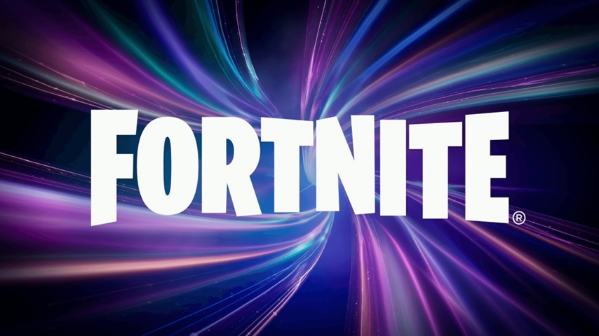
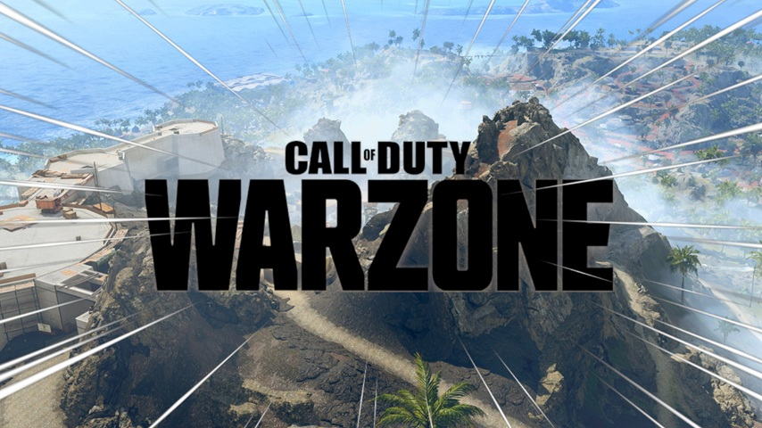
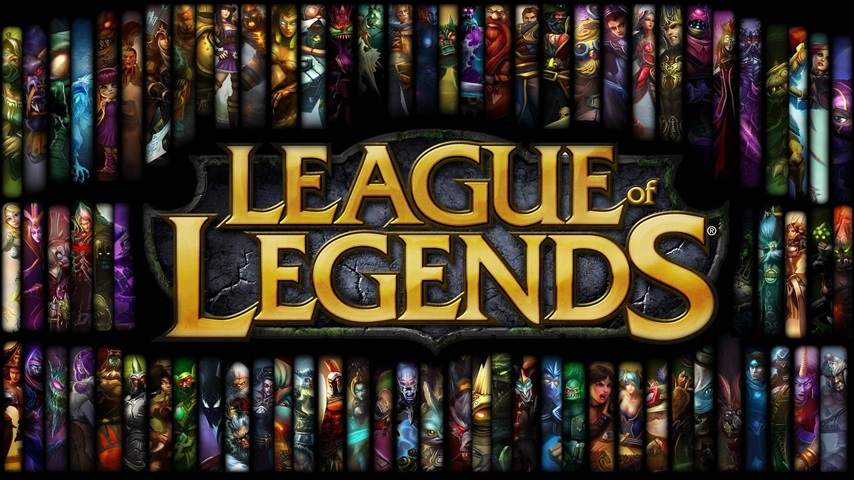
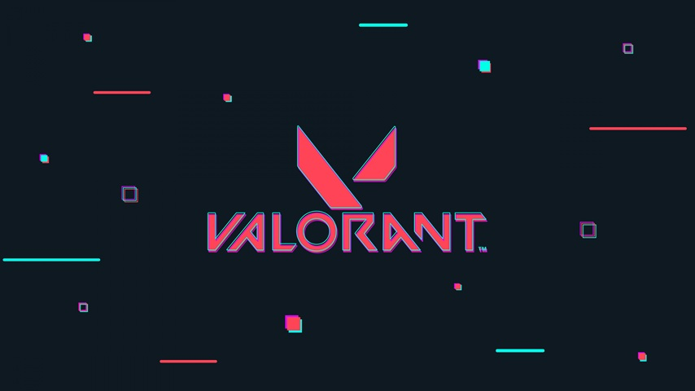
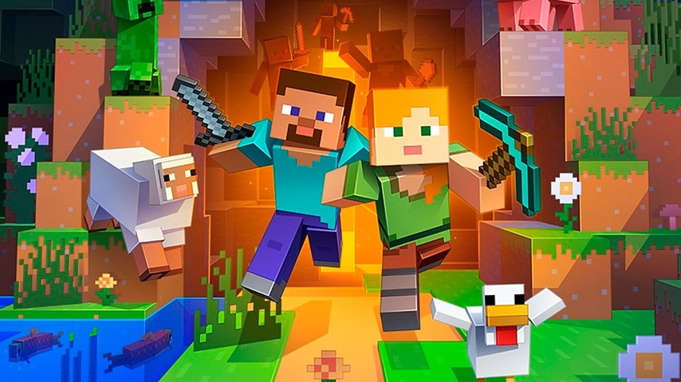

¿Qué son los juegos Online?
Un juego online es un videojuego que requiere conexión a Internet para funcionar total o parcialmente, permitiendo a los jugadores interactuar en tiempo real con otras personas o con servidores remotos. A diferencia de los juegos exclusivamente offline, los juegos online pueden incluir modos multijugador, competiciones, cooperativo, actualizaciones constantes y eventos en vivo.
Estos juegos pueden jugarse en distintas plataformas como PC, consolas o dispositivos móviles, y suelen ofrecer experiencias dinámicas que evolucionan con el tiempo.
Juegos Online Destacados
Marvel Rivals

Marvel Rivals es un videojuego online multijugador de tipo hero shooter en tercera persona que enfrenta a equipos de seis jugadores en intensas batallas PvP ambientadas en el universo Marvel.
El título permite escoger entre una amplia variedad de superhéroes y villanos con habilidades únicas, fomentando la estrategia y la cooperación para aprovechar sinergias entre personajes y dominar el campo de batalla.
Al tratarse de un juego completamente online, requiere conexión a Internet para participar en partidas competitivas en tiempo real contra jugadores de todo el mundo, ofreciendo modos dinámicos, mapas con elementos interactivos y actualizaciones constantes que añaden nuevos personajes y contenido.
Además, su modelo free-to-play facilita el acceso a la experiencia principal, mientras que las temporadas y eventos mantienen activa a la comunidad, consolidándolo como una propuesta destacada dentro de los juegos online competitivos actuales.
Fortnite

Fortnite es un videojuego online de tipo battle royale en el que hasta 100 jugadores compiten simultáneamente en un mapa abierto para ser el último en pie, combinando disparos, construcción estratégica y supervivencia en partidas de ritmo intenso.
El título ofrece distintos modos de juego, entre ellos el popular Battle Royale, que enfrenta a jugadores en combates cada vez más reducidos por una tormenta que obliga al movimiento constante, y Creative, donde los usuarios pueden diseñar sus propios mundos y experiencias.
Fortnite se caracteriza por su estilo gráfico colorido, actualizaciones frecuentes con nuevas temporadas, eventos temáticos y colaboraciones con franquicias de la cultura pop, lo que mantiene la experiencia fresca y culturalmente relevante.
Al ser un juego online, requiere conexión a Internet y permite jugar con o contra otros jugadores de todo el mundo, fomentando la competencia y la cooperación en tiempo real.
Fall Guys

Fall Guys es un videojuego online multijugador de tipo party game en el que hasta 60 jugadores compiten simultáneamente en una serie de desafíos y minijuegos al estilo de pruebas físicas, carreras de obstáculos y dinámicas cooperativas o competitivas.
El título destaca por su estilo visual colorido y caricaturesco, su humor y su accesibilidad, lo que lo convierte en un juego divertido para todo tipo de jugadores, desde casuales hasta más dedicados.
Al ser completamente online, requiere conexión a Internet para participar en partidas en tiempo real contra otros jugadores de todo el mundo, ofreciendo eventos temáticos, temporadas con nuevas rondas y cosméticos desbloqueables que mantienen la experiencia fresca y dinámica.
Además, su modelo free-to-play y sus mecánicas sencillas pero entretenidas lo consolidan como uno de los juegos online más reconocibles y populares dentro del género de party games, pese a que su pico de popularidad haya sido mayor hace algunos años.
Call of Duty: Warzone

Call of Duty: Warzone es un videojuego online de tipo battle royale y shooter en primera persona que enfrenta a decenas de jugadores en grandes mapas con el objetivo de ser el último en pie, combinando acción táctica, armas realistas y modos de juego dinámicos.
Integrado dentro de la franquicia Call of Duty, Warzone ofrece partidas intensas con elementos como zonas seguras decrecientes, contratos en el mapa, un sistema de economía para reapariciones y modos tanto solo como por equipos, lo que lo convierte en una experiencia estratégica y competitiva.
Al ser un juego completamente online, requiere conexión a Internet para participar en enfrentamientos en tiempo real contra jugadores de todo el mundo, y se mantiene en constante evolución mediante actualizaciones, temporadas, nuevos contenidos y eventos que renuevan las armas, mapas y mecánicas de juego.
Su combinación de jugabilidad táctica, ritmo acelerado y gran base de jugadores lo posiciona como uno de los shooters online más populares y seguidos en la actualidad.
League of Legends

League of Legends es un videojuego online de tipo MOBA (Multiplayer Online Battle Arena) en el que dos equipos de cinco jugadores compiten en partidas estratégicas con el objetivo de destruir la base del equipo contrario mientras defienden la propia.
Cada jugador controla un “campeón” con habilidades únicas, lo que requiere coordinación, estrategia y táctica para combinar habilidades, controlar el mapa y superar al rival.
Al ser completamente online, las partidas se juegan en tiempo real contra otros jugadores de todo el mundo, y el juego se mantiene actualizado constantemente con nuevos campeones, modos temporales, eventos y cambios de equilibrio que mantienen la experiencia fresca y competitiva.
Gracias a su profundidad estratégica, su escena profesional consolidada y su comunidad global, LoL se ha convertido en uno de los juegos online más populares y emblemáticos dentro del género competitivo.
Valorant

Valorant es un videojuego online de tipo shooter táctico en primera persona desarrollado por Riot Games, en el que dos equipos de cinco jugadores compiten en partidas estratégicas con objetivos específicos, como plantar o desactivar una “spike”.
Cada jugador selecciona un agente con habilidades únicas que complementan la acción de disparos, lo que requiere coordinación, estrategia y comunicación constante para superar al equipo rival.
Al ser completamente online, Valorant depende de la conexión a Internet para partidas en tiempo real contra jugadores de todo el mundo y ofrece modos competitivos, clasificaciones, eventos especiales y actualizaciones periódicas que añaden agentes, mapas y mejoras de balance.
Su combinación de precisión en la puntería, habilidades tácticas y ritmo estratégico lo ha consolidado como uno de los shooters online más destacados y populares en la escena competitiva global.
Rocket League

Rocket League es un videojuego online de tipo deportes y acción en el que los jugadores controlan coches propulsados por cohetes para competir en partidos de fútbol con vehículos en lugar de jugadores humanos.
Cada equipo busca anotar goles golpeando una pelota gigante mientras realiza acrobacias aéreas, maniobras rápidas y estrategias cooperativas para superar al adversario.
Al ser completamente online, Rocket League permite jugar en tiempo real con otros jugadores de todo el mundo, tanto en partidas casuales como competitivas, y ofrece modos de juego variados, temporadas con recompensas, personalización de vehículos y torneos oficiales que mantienen la experiencia fresca y emocionante.
Su mezcla de acción, estrategia y accesibilidad lo ha convertido en uno de los juegos online más divertidos y populares dentro del género competitivo y casual a nivel global.
Minecraft

Minecraft tiene un apartado online que permite a los jugadores conectarse a servidores y mundos compartidos para explorar, construir y sobrevivir junto a otros usuarios en tiempo real.
En su modo multijugador, los jugadores pueden participar en aventuras cooperativas, competir en minijuegos, unirse a servidores públicos o privados con reglas personalizadas y experimentar contenidos creados por la comunidad, como mapas, desafíos y mods.
Gracias a estas posibilidades, la experiencia online de Minecraft se mantiene siempre dinámica y en constante evolución, fomentando la interacción social, la creatividad compartida y la colaboración global entre millones de jugadores en todo el mundo.